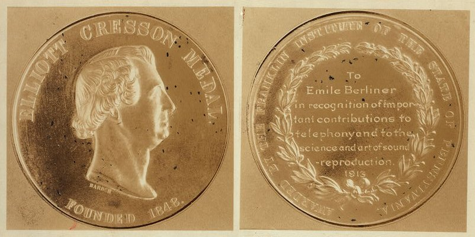

chapter28.1--handout
Background Information
Samuel Vauclain
Samuel Matthews Vauclain (May 18, 1856 – February 4, 1940) 美国工程师，Vauclain compound locomotive创始人，Baldwin Locomotive Works的总裁。获得John Scott Award和the Elliott Cresson Medal，以及the Distinguished Service Medal for arming the United States Army during World War I.（因为在一战期间给美国陆军提供军火）
💧John Scott Award
表彰创造出了 "comfort, welfare, and happiness of human kind" 的发明的人。
💧the Elliott Cresson Medal
是表彰作出以下贡献的人："for some discovery in the Arts and Sciences, or for the invention or improvement of some useful machine, or for some new process or combination of materials in manufactures, or for ingenuity skill or perfection in workmanship."

💧the Distinguished Service Medal
表彰为联邦政府和军队作出贡献的人
distinguished himself by exceptionally meritorious service to the Government in a duty of great responsibility
Baldwin Locomotive Works
The Baldwin Locomotive Works是一个美国的工厂，生产火车和铁路相关的部件（railroad locomotives）最早是在费城建立，之后搬到宾州，几十年来这个公司都是世界上最大的蒸汽火车厂商（The company was for decades the world's largest producer of steam locomotives）, 但是也一直在寻求向柴油火车转型。（but struggled to compete as demand switched to diesel locomotives.）1956年， Baldwin生产了最后一批火车，随后在1972年破产。
Georgette Leblanc
Georgette Leblanc是法国女高音歌唱家（French operatic soprano）, 同时也是演员、作家，是小说家Maurice Leblanc的妹妹。
她刻画了Ariane的角色（Ariane et Barbe-bleue），不仅在原始的舞台上（ original 1899 stage play by Maeterlinck），还在1907改版的歌剧中（the 1907 opera adaptation by Paul Dukas），都取得了巨大的成功，同时她还参演了很多法国电影，在她人生的后几十年，她致力于写作，写出了两部商业上很成功的自传（two commercially successful autobiographies）以及一系列儿童读物（children's books）和游记（travelogues）。
Dublin（都柏林）
都柏林（Dublin）是爱尔兰共和国的首都以及最大的城市，靠近爱尔兰岛东岸的中心点，位处都柏林郡的利菲河（River Liffey）河口、都柏林地区的中心。都柏林自中世纪以来一直是爱尔兰首都城市，也是爱尔兰岛上最大的城市。由于很多高技术企业聚集，所以有欧洲的硅谷之称。
Dublin这个字起源于爱尔兰语的Dubh Linn（意为“黑色池塘”）。都柏林的现代爱尔兰名Baile Átha Cliath（意为“芦苇障碍做成的浅滩之城”）则是指在黑色池塘旁边的定居地。
都柏林是20世纪末和21世纪初爱尔兰经济增长奇迹的中心点，这一时期爱尔兰经济经常保持两位数的增长，被称为凯尔特之虎的年代。该市的生活水准已经有了戏剧性的增长，同时生活费用也已经暴涨。2008年，都柏林名列世界最富裕城市的第5位。根据一份资料，都柏林现在名列全球最昂贵城市的第16名（在欧洲名列第8，不包括俄罗斯城市）。它还被列为世界上生活开支第3高的城市。不过，它也是全世界工资水平第2高的城市，超过纽约市和伦敦，仅次于苏黎世。
都柏林还是一个浪漫且文艺的城市，著名作家王尔德、萧伯纳都来自都柏林。
王尔德这个怪才以他独到的思想吸引着成千上万的游客，他的墓位于法国巴黎的Père Lachaise Cemetery，虽然王尔德大大早就come out of the closet/出柜，每年都有好多年轻女性来他的墓前留下自己的红唇印以示爱慕（直男朋友们羡慕吗...），后来当地政府为了保护文物，不得不把王尔德的墓碑用玻璃圈养了起来...
Vocabulary
shoddy
💧inferior, weak, dishonest, dishonorable
adj. 劣质的;劣等的
💧It is a fairly shoddy way to treat an employee.
这样对待雇员真是十分可鄙。
💧The dealer stuck me with shoddy merchandise.
那个商人用假货骗我
berate
💧censure severely or angrily
vt. 严责；申斥
💧She berated herself for being fickle.
她痛责自己的反复无常。
💧The dissatisfied customer berated the florist.
不满意的顾客责骂花商。
dealership
💧an authorized seller
n. 代理权,经销权
💧Since then she's found a new home with one of the car dealership employees.
现在她已经在找到了新家，经销商的一个员工将其收养。
💧Workers at a Lexus dealership in Texas rescued the kitten after they heard her meowing.
德州雷克萨斯经销商的工作人员听到了她的叫声后将其救出。
prodigious
💧large, big,significant, important, extraordinary
adj. 异常的,惊人的,奇异的;巨大的
a prodigious opportunity
绝好的机会
She was a witch of prodigious skill and possessed of much gold.
她是一个技艺高超的女巫，拥有很多财富。
💧另外，prodigious的名词，prodigy，表示奇才的意思，例如：神童，就是Child prodigy
tarnish
💧vt. & vi. (通常指金属)(使)失去光泽；(使)变灰暗、失去希望
💧a tragedy that tarnished our hopes
一场使我们的希望成为泡影的悲剧
💧Lemon juice would tarnish the gilded metal.
柠檬汁会使镀金金属失去光泽。
💧That festered under his papacy which critics say still tarnish his legacy.
批评者称这些在他担任教皇期间不断加重的丑闻给他的任职抹了黑。
mischievous
💧playful, bad, harmful
adj. 淘气的, 顽皮的
💧a mischievous prank.
一个作弄人的恶作剧
💧There was a mischievous twinkle in his eyes.
他眼睛里露出淘气的神色。
Crush Your Problems
- With that reputation Mr. Henke had given him to live up to, how could he do anything else but turn out work comparable to that which he had done in the past.
💧the reputation to live up to...给他一个...的名声，去实现。
有着Mr. Henke给他的这样的一个名声，他除了把工作做的保质保量像以前一样，还可能做什么别的吗？
💧live up to很多场景都可以用，比如：
And occasionally you think, "Well, how can I ever live up to this?"
但偶尔你也会想到，我怎样才能不负众望？
Just remember never to promise anything we are not sure we can live up to.
只要记住绝对不要许下任何你没把握遵守的谎言。
- "The average person can be led readily if you have his or her respect and if you show that you respect that person for some kind of ability."
💧一般人可以随意被引导，如果你让他对你有所尊敬，并表达你尊敬他哪方面具体的能力。
💧have one's respect 让别人尊敬自己
My team-mates will always have my respect but you never will now.
我很尊敬自己的队友，但是你们从不会尊重球员。
另外，比如have one’s word也是可以的，相当于have one’s promise
No, you have my word as a gentleman.
不，我订的是君子协议。
- I have respected the fact that you are always willing to listen and are big enough to change your mind when the facts warrant a change.
💧big enough to...很大度所以...
big这个很小的词，其实有很有用的意思，比如，两个人吵架的时候，想要劝架，可以说，你要证明自己是更好的人：
You've got to prove that you are the bigger man.
他们搞了个了不起的事情：
What they have accomplished was something big. - Give a dog a bad name and you may as well hang him.
💧字面意思是给人加个坏名声，你还不妨吊死他
也就是说，名声对一个人很重要。
很多英文搭配中，狗子都是一个用来指人的意向，比如：
💧lucky dog 幸运儿
💧slumdog 贫民窟
💧work like a dog 拼命工作，忙成狗的英文版吧～
💧dirty dog 卑鄙小人
💧every dog has its day 凡人都有得意日；风水轮流转
💧a dog-eat-dog society 一个狗咬狗的社会
- His only redeeming feature was his ability to learn rapidly and master the school work easily.
💧他唯一可以弥补的特点就是他快速学习的能力，以及能轻易掌握学校的内容。
redeeming feature
redeem表示restore the honor or worth of
这里就是说这个孩子唯一可以弥补一点的地方就是...
Content Analysis
昨天的内容中，卡叔告诉我们激励/赞美在管理中的重要性，那么和激励与赞美同样重要的，更是一个人的好名声，所以今天卡叔要告诉我们的是，如何给人一个好的名声～
当你有个员工，工作效率和结果大不如前了，你可以骂他指责他，但是结果都不会好，Henry Henke又一个不同的方式，当他发现有员工出现这种问题的时候，Henry选择和这个员工将心比心地交流一次（Instead of bawling him out or threatening him, Mr. Henke called him into his office and had a heart-to-heart talk with him.）
在沟通的过程中，Henke给了Bill中肯的评价，并说有Bill的帮助事情一定可以做好。（I felt sure you would want to know that I am not happy with this situation, and perhaps jointly we could find some way to correct the problem.）Bill说自己没有意识到这个问题，之后会改进。最终的结果，自然是Bill追回了之前的业绩，因为有这么高的评价，不努力也不行呀～（With that reputation Mr. Henke had given him to live up to, how could he do anything else but turn out work comparable to that which he had done in the past.）
包德文铁路机车工厂总经理Vauclain说，一般人可以随意被引导，如果你让他对你有所尊敬，并表达你尊敬他哪方面具体的能力。（"The average person can be led readily if you have his or her respect and if you show that you respect that person for some kind of ability."）
我们也可以这样说，如果你想改善一个人某方面的缺点，你要表示出，他已经具有这方面的优点了。莎士比亚说：“如果你没有某种美德，就假定你有。”（ "Assume a virtue, if you have it not." ）事先“假定”对方有你所要激发的美德，然后给他一个美好的名誉去表现，这样他会尽其所能，不愿意让你失望。
Bill Parker这位优秀的销售员也用了这样的方式，他努力推广被拒后，认真的写了信给对方，说明自己认为对方（Jack）是乐于倾听、并且乐于接受变革的人。（I have respected the fact that you are always willing to listen and are big enough to change your mind when the facts warrant a change.）最终Jack自然是无法拒绝。
Dr. Martin Fitzhugh让他的charwoman洗设备的方式也是一样，他给了她一个reputation，很短的时间内能完成很好的工作，他希望她可以多花时间做到更好（I see you so seldom, I thought I'd take the time to thank you for the fine job of cleaning you've been doing.），最终的结果也是一样，第二天Martin看到的是焕然一新的办公室。
有这样一句古语：“如果不给一条狗取个好听的名字，不如把牠勒死算了。”（"Give a dog a bad name and you may as well hang him."）因为好的名声，对于一个人来说是无比重要的。
Mrs. Ruth Hopkins的学校里，有一个特别调皮的孩子Tommy，对学校和同学有很不好的影响，老师们都很头痛，Mrs. Ruth最终给了Tommy一个reputation："Tommy, I understand you are a natural leader. I'm going to depend on you to help me make this class the best class in the fourth grade this year." 她说希望Tommy可以帮她一起让班级变得更好，这样的reputation之下，Tommy自然会做好。
所以，你要影响一个人的行为，而不引起他的反感，记住第七项规则，那是：给人一个美名让他去保全。
If you want to excel in that difficult leadership role of changing the attitude or behavior of others,use ...
Principle 7 - Give the other person a fine reputation to live up to.
Today's Bonus
今天的标题很有趣，卡叔想表达的是给人一个“高帽子”，然而说的是Give a Dog a Good Name，今天得彩蛋，给大家推荐几部和狗子有关的电影吧～
💧《一条狗的使命》（A dog's purpose）
主角为：新斯科舍猎鸭寻猎犬，德国牧羊犬，柯基犬，圣伯纳犬
IMDB评分：7.6 ★★★★

该片根据W·布鲁斯·卡梅伦同名小说改编，讲述了一条狗贝利经历多次重生，在一次次生命的轮回中寻找不同的使命，最后又回到了最初的主人身边的故事。
💧《忠犬八公的故事》（Hachi）
主角为：秋田犬
IMDB评分：9.2 ★★★★★
影片讲述一位大学教授收养了一只小秋田犬，取名“八公”。之后的每天，八公早上将教授送到车站，傍晚等待教授一起回家。不幸的是，教授因病辞世，再也没有回到车站，然而八公在之后的9年时间里依然每天按时在车站等待，直到最后死去。
💧《南极大冒险》（Eight Below）
主角为：哈士奇
IMDB评分：8.6 ★★★★☆
电影讲述了八条雪橇犬在残酷的大自然中努力集体求生的故事。这八被留在冰天雪地南极的狗儿们不畏冰雪，依然奋勇求生守在原地，这场生存竞赛是在跟时间赛跑，狗儿们克服风雪的考验，再度跟主人重逢。
💧《我和狗狗的10个约定》
主角为：金毛
IMDB评分：8.0 ★★★★
影片讲述了少女齐藤明莉收养了一只流浪狗，给它起名为索克斯并与它定下了十个约定。毕业后忙碌的生活让她无暇顾及索克斯，然而在她需要帮助的时候，索克斯却和以前一样赶来帮忙。明莉想起十个约定中的一条：狗只能活十年左右，所以请尽量和它在一起。距离初遇索克斯的那天，已经过了十年。
💧《导盲犬小Q》（Quill）
主角为：拉布拉多
IMDB评分：8.4 ★★★★
电影讲述了可鲁（小Q）成为导盲犬（Guide dog）后，为中年失明的渡边先生服务，但两年后因主人患上肾衰竭被送回训练中心。渡边去世后小Q在做导盲犬示范表演时，被寄养家庭的仁井夫妇接回家中，后患白血病去世。
💧《灵犬莱西》（Lassie）
主角为：格力犬
IMDB评分：8.7 ★★★★☆
该片主要以忠犬万里回家的经历为主要线路，表现人和动物之间的深厚情谊。故事发生在二战前夕的英格兰约克夏郡：山姆和妻子莎拉一直过着极困窘的生活，受动荡时局的影响，山姆失去了唯一的工作，为了维持生计，山姆不得不将儿子乔的爱犬莱西卖给鲁德林公爵。思念小主人的莱西，几次从公爵家偷跑出去，但忠厚的山姆一家每次都忍痛将它归还。后来，公爵和孙女搬到遥远的苏格兰，莱西再次逃了出来，并历尽千辛万苦回到主人身边。老公爵被莱西的勇气和毅力打动，将它送还给乔，莱西终于和主人团聚。
smart word
今天感触最深的是：
"The average person can be led readily if you have his or her respect and if you show that you respect that person for some kind of ability."